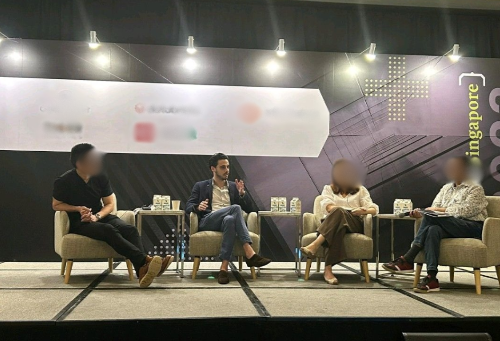

Chaos Coordinator
Pedro Duarte
Datapippd · data pipe Pedro Duarte

As the Chaos Coordinator, I turn messy data and unwritten processes into something an organisation can run.
I trained as an engineer, in energy and in robotics and automation, and started out writing software. Then I spent the next decade inside financial services: custody, fund accounting and middle office on three continents, client service for some of the largest asset managers, and data and analytics leadership for global operations. Since 2024 I run Datapippd.
The engineering habit stayed. Define the structure first, then build on it.
Based in Warsaw, working worldwide. I speak at conferences on data, operations and AI.